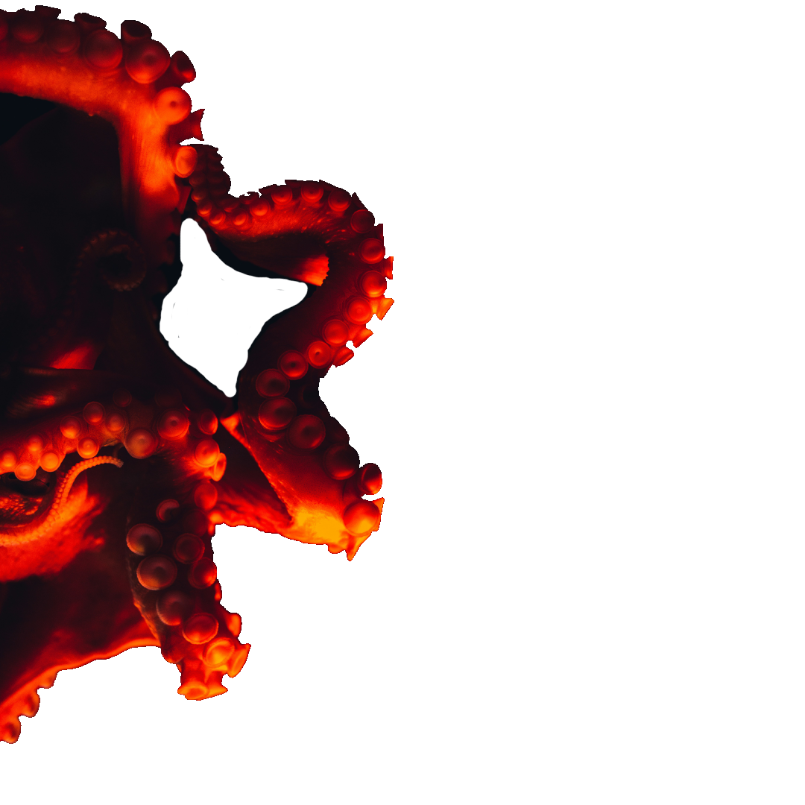
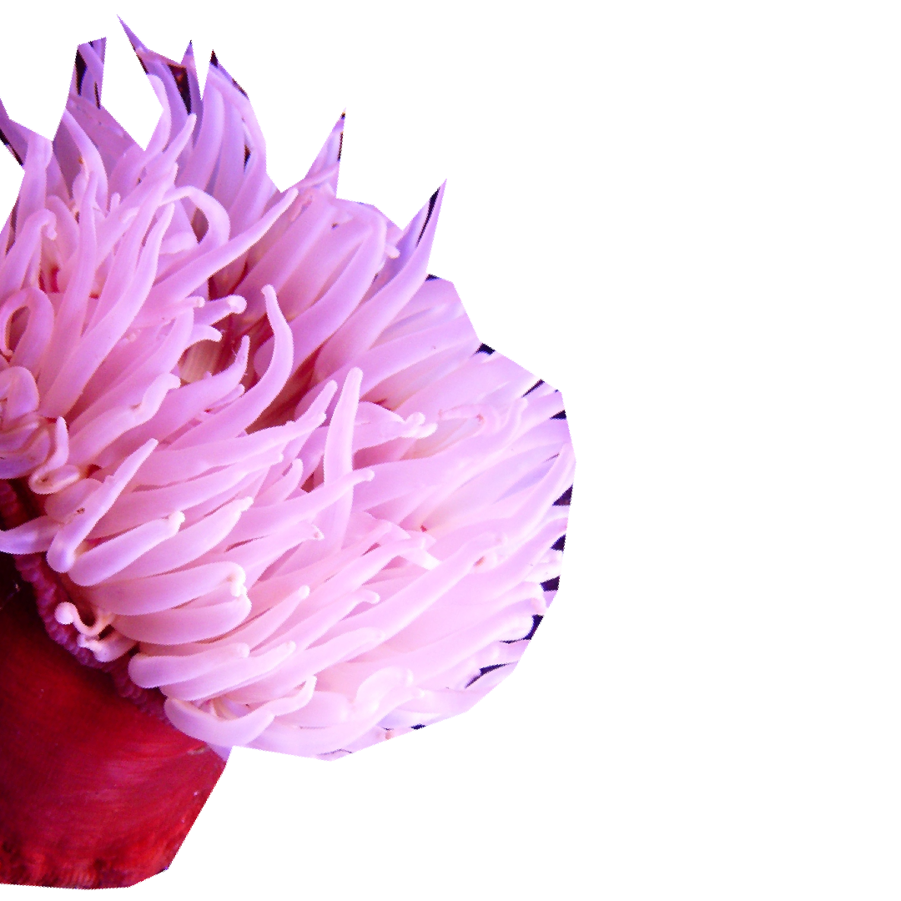
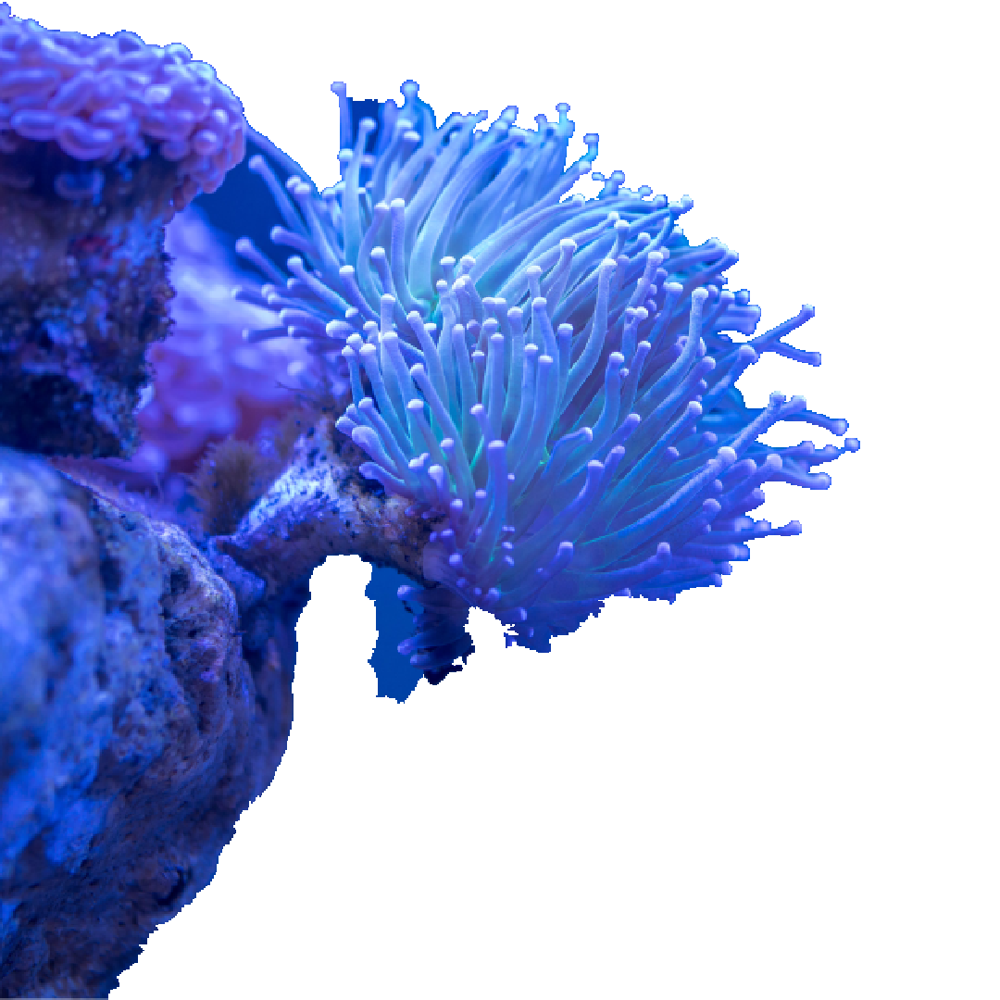
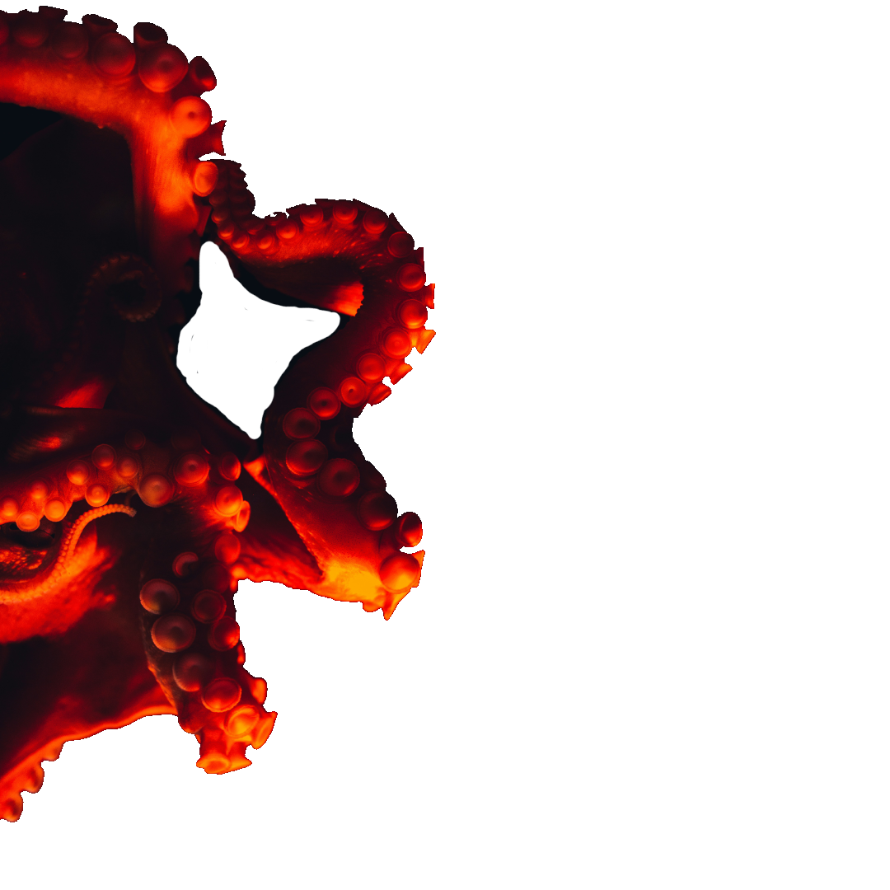
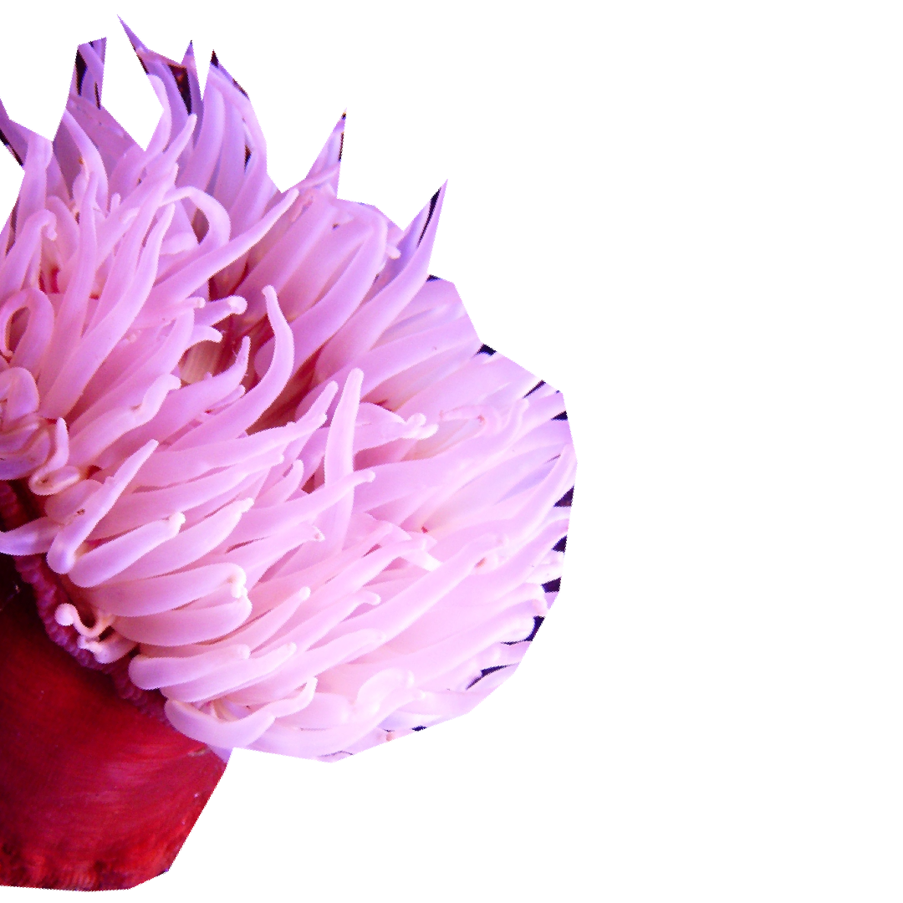
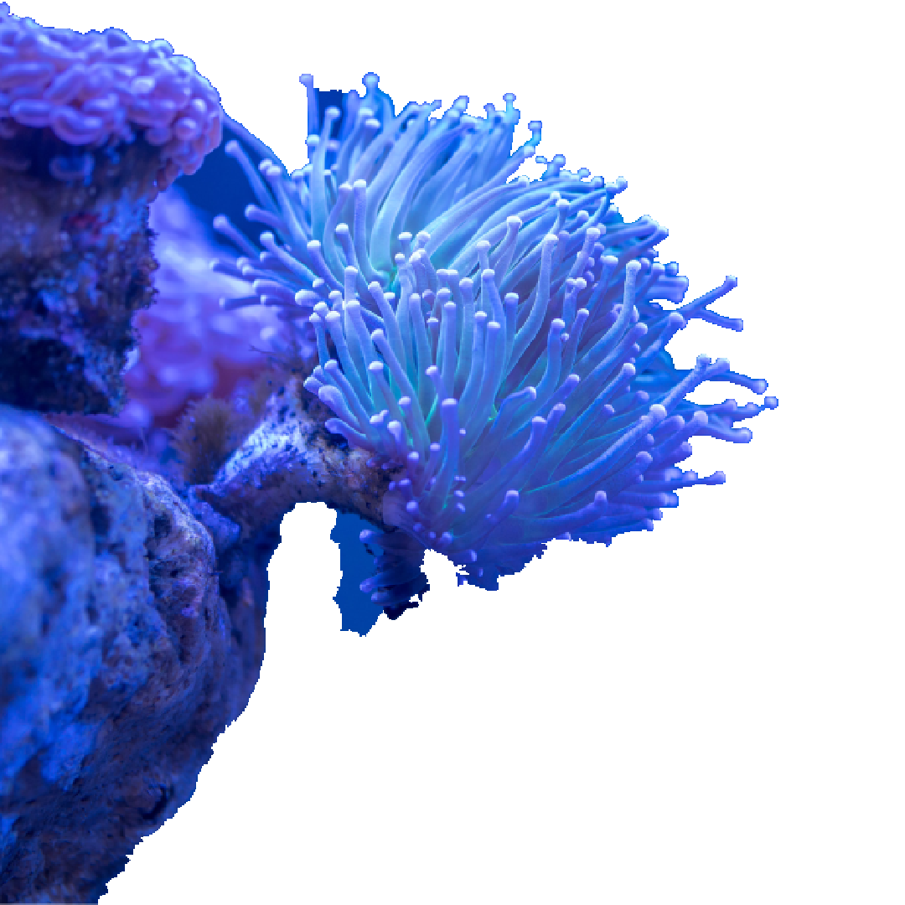

T
ección
pro
Somos un faro de protección en el vasto océano de desafíos que enfrentan nuestros amigos acuáticos. Nos comprometemos fervientemente a salvaguardar la vida marina, desde las majestuosas ballenas hasta las diminutas criaturas que habitan los arrecifes. Nuestra labor abarca desde la prevención de la contaminación hasta la preservación de hábitats cruciales. Cada acción que emprendemos es un testimonio de nuestra inquebrantable dedicación a la protección de la riqueza biológica de los océanos, porque creemos que el futuro saludable de nuestro planeta depende de la preservación de estos tesoros marinos. Únete a nosotros en este viaje de compromiso y cuidado, donde la palabra "protección" cobra vida en cada ola que abrazamos.
E
rvación
pres
Nuestra misión se centra en la conservación y protección de la vida marina. Trabajamos incansablemente para salvaguardar hábitats cruciales y preservar la diversidad biológica de los océanos. Desde la prevención de la contaminación hasta la creación de programas de conservación, cada esfuerzo refleja nuestra firme dedicación a la preservación marina. Nos esforzamos por asegurar un futuro sostenible para las majestuosas criaturas que llaman hogar a los vastos océanos. Únete a nosotros en este viaje de compromiso y amor por los tesoros marinos que merecen perdurar para las generaciones venideras.
A
ñas
camp
En nuestro corazón late la pasión por la vida marina, y nuestras campañas son el eco de nuestro compromiso. Unimos esfuerzos para llevar a cabo campañas significativas que van más allá de las palabras, trabajando incansablemente por la protección y conservación de los animales marinos. Cada campaña es un llamado a la acción, un recordatorio de que juntos podemos marcar la diferencia. Únete a nosotros en este viaje, donde las campañas se convierten en puentes hacia un futuro más brillante para nuestros amigos del océano.
L
ancia
vigi
La vigilancia constante es nuestra promesa a los habitantes marinos. A través de programas especializados y una dedicación inquebrantable, nos convertimos en guardianes de las aguas, supervisando y protegiendo la vida acuática. Nuestra labor va más allá de la observación; es un compromiso vigilante para garantizar un entorno marino seguro. Únete a nuestra causa, donde la vigilancia se convierte en el pilar de nuestro empeño por preservar los océanos.
 




